02 — Grafos
1 Teoria de Grafos
1.1 Grafo versus Gráfico
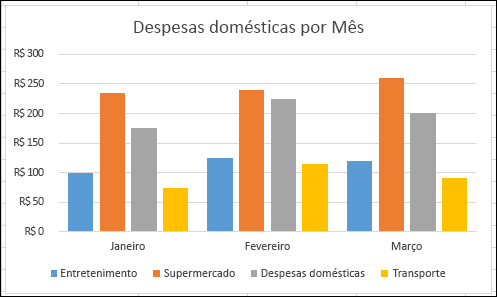 |
|
| Gráfico | Grafo |
1.2 Pontes de Kaliningrado
É possível andar pela cidade atravessando cada ponte exatamente uma vez?
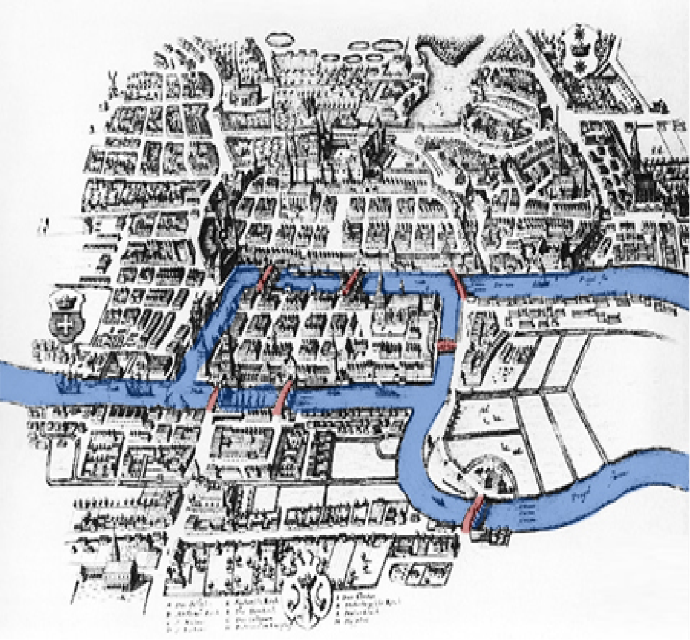
O problema das Sete Pontes de Königsberg (atual Kaliningrado) é o quebra-cabeça histórico que deu origem à Teoria dos Grafos. A cidade era dividida por um rio em quatro regiões — uma ilha e três margens — ligadas por sete pontes, e o desafio era encontrar um passeio que atravessasse cada ponte exatamente uma vez.
1.3 Leonhard Euler
Matemático e físico suíço. Tentou responder à questão sobre as pontes de Kaliningrado e, para tanto, desenvolveu a Teoria dos Grafos.
Euler representou o problema como um grafo, em que cada região da cidade é um vértice e cada ponte é uma aresta:
1.4 Pontes de Kaliningrado: Resolução
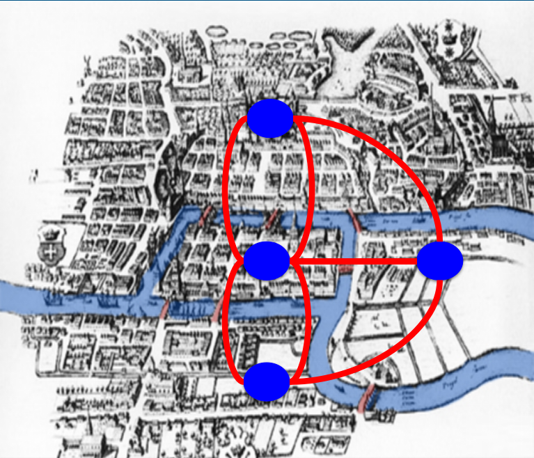
É possível andar pela cidade atravessando cada ponte exatamente uma vez? Euler demonstrou que não: como todos os quatro vértices do grafo têm grau ímpar (número ímpar de pontes), não existe um caminho que percorra cada aresta exatamente uma vez sem repetição — condição que hoje conhecemos como a exigência de um caminho euleriano.
2 Grafo
2.0.1 Definição 1
Um grafo é uma representação matemática de um objeto consistindo de vértices (nós) e arestas, representando elementos e conexões, respectivamente.
G = (V, E) — o grafo G é um conjunto formado por um conjunto de vértices V e um conjunto de arestas E.
Nota
O que é, em biologia:
V: vértices (ex.: genes, proteínas, metabólitos).
E: arestas (ex.: interações, reações químicas).
2.0.2 Definição 2
G = (V, E)
O grafo G é um conjunto formado por um conjunto de vértices V = {v₁, v₂, v₃, …, vₙ} e um conjunto de arestas E = {(v₁, v₂), (v₃, vₙ), …, (vₓ, vᵤ)}.
Nota
Exemplo — grafo de regulação gênica:
V = {GeneA, GeneB, GeneC}
E = {GeneA → GeneB, GeneB → GeneC}
2.0.3 Definição 2 expandida
G = (V, E)
O grafo G é um conjunto formado por um conjunto de vértices V e um conjunto de arestas E. Um grafo é uma representação matemática de um objeto consistindo de vértices (nós) e arestas representando elementos e conexões, respectivamente.
2.1 Vértices ou nós
- São os elementos do grafo. Os elementos podem ser qualquer coisa:
- Pessoas
- Lugares
- Genes
- Animais
- Proteínas
- …

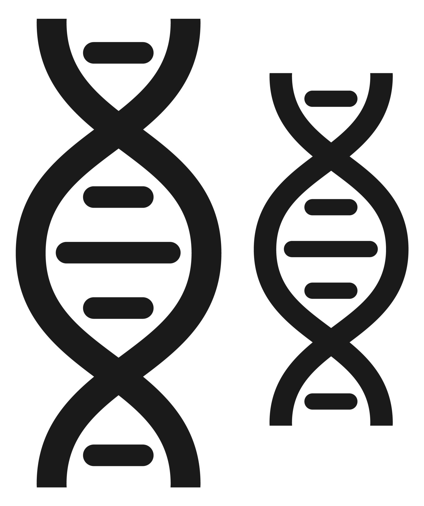

Dica
Sua representação gráfica pode ser um ponto ou um círculo que pode, ou não, conter algum símbolo interno.
2.2 Arestas
As arestas indicam relações entre os elementos. O significado da relação pode mudar dependendo dos elementos. Por isso as arestas podem ser:
Não-direcionadas ― : (v₁, v₂) = (v₂, v₁)
Quando a ligação não exibe precedência, somente relação simétrica.
Exemplo: complexo proteico onde A interage com B e vice-versa.Direcionadas → : (v₁, v₂) ≠ (v₂, v₁)
Quando a ligação entre os dados indica precedência ou ordem:- causa e efeito;
- antes ou depois;
- substrato → produto;
- Exemplo: GeneX ativa a expressão de GeneY (GeneX → GeneY).
Por consequência:
- Grafos com arestas direcionadas são grafos direcionados.
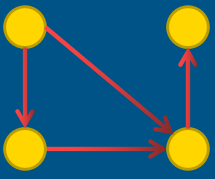
- Grafos com arestas não-direcionadas são grafos não-direcionados.
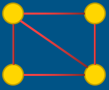
2.3 Grafo conectado e não-conectado
- Um grafo não-direcionado é conectado quando possui pelo menos um vértice e existe um caminho entre cada par de vértices.
- Em um grafo conectado, não há vértices inacessíveis.
- Um grafo não direcionado que não está conectado é chamado desconectado.
- Um grafo não direcionado G é, portanto, desconectado se existir dois vértices em G, de modo que nenhum caminho em G tenha esses vértices como pontos finais.
- Um grafo com apenas um vértice está conectado.
- Um grafo sem arestas entre dois ou mais vértices é desconectado.
Em biologia:
- Conectado: todos os vértices estão ligados (ex.: rede metabólica essencial).
- Desconectado: componentes isolados (ex.: vias metabólicas independentes).
2.4 Algumas definições
2.4.1 Adjacência
Se os vértices compartilham da mesma aresta então eles são adjacentes entre si.
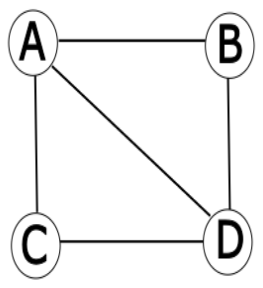
2.4.2 Grau
O grau de um vértice é o número de arestas que incidem nele.
Exemplo:
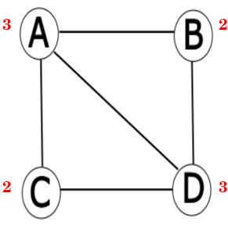
2.4.3 Grau (grafos direcionados)
Para o grafo direcionado, o grau de vértice pode ser dividido em: - Grau de entrada - Grau de saída
Exemplo:
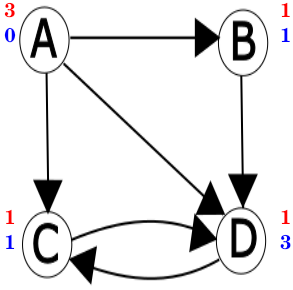
2.4.4 Laço
Quando uma aresta começa e termina em um mesmo vértice ela é chamada de laço (loop).
2.4.5 Layout
É a posição dos vértices e o desenho das arestas — o mapeamento dos vértices e arestas de um grafo G=(V,E) em posições geométricas (coordenadas), seguindo regras que podem minimizar cruzamentos de arestas, destacar hierarquias ou comunidades, e facilitar a identificação de padrões.
Aviso
O layout não altera a estrutura matemática do grafo, mas influencia diretamente a compreensão humana das relações entre os elementos.
Por que o layout é importante?
- Clareza: evita sobreposição de arestas (ex.: em redes densas como interações proteicas).
- Análise: layouts específicos revelam propriedades (ex.: hubs em redes livres de escala).
- Comunicação: facilita a apresentação de dados complexos em artigos ou relatórios.
| Tipo de layout | Características | Aplicação em biotecnologia |
|---|---|---|
| Force-Directed | Arestas como molas, vértices se repelem | Redes de coexpressão gênica (identifica módulos funcionais) |
| Hierárquico | Vértices em camadas (top-down) | Cascatas de sinalização celular (ex.: via MAPK) |
| Circular | Vértices em um círculo | Interações proteína-DNA para destacar elementos centrais |
| Radial | Vértices dispostos em anéis concêntricos | Árvores filogenéticas (evolução de patógenos) |
2.4.6 Force-Directed e Hierárquico


2.4.7 Circular e Radial

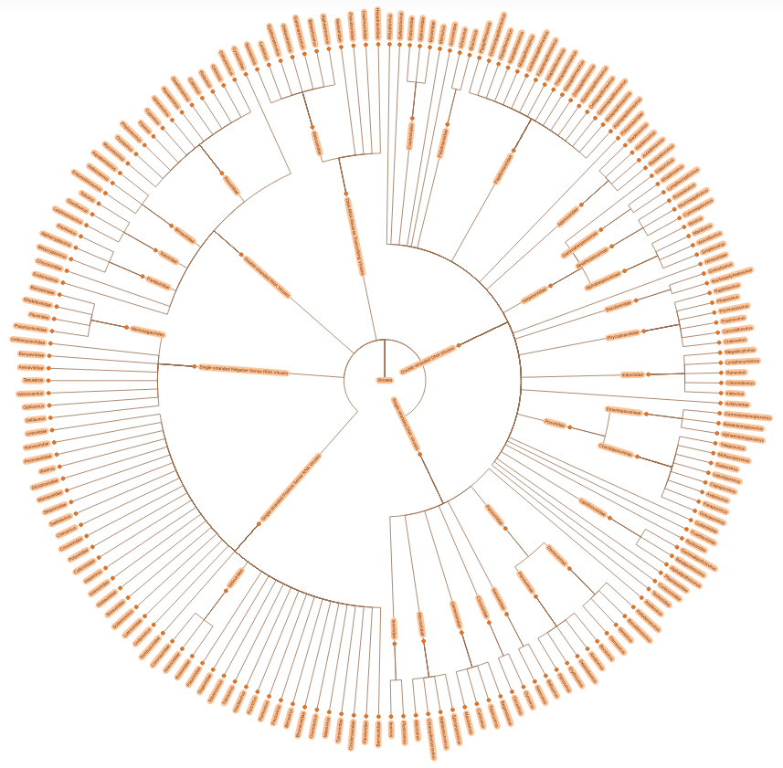
Nota
Ferramentas para layout de grafos:
- Cytoscape: oferece algoritmos como Prefuse Force-Directed para redes biológicas.
- Gephi: usa Force Atlas 2 para layouts dinâmicos.
- Python (NetworkX + Matplotlib): permite customização via
spring_layoutoucircular_layout.
Dica: em biotecnologia, escolha o layout com base no objetivo — para identificar comunidades, use force-directed; para mostrar fluxos, use hierárquico.
2.5 Subgrafo
G’ = (V’, E’) onde V’ é um subconjunto de V e E’ é um subconjunto de E.
Isso implica que E’ só possui arestas que começam e terminam em vértices que estão em V’.
2.5.1 Subgrafo Induzido
Se G’ é um subgrafo de G e E’ possui todas as arestas de E que ligam os vértices de V’, então esse subgrafo é chamado de grafo induzido.
Exemplo:
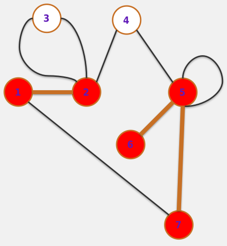
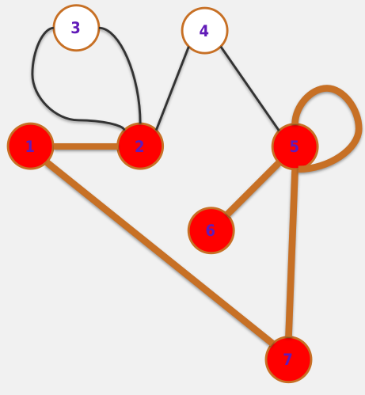
2.6 Isomorfismo
Dois grafos G₁ = (V₁, E₁) e G₂ = (V₂, E₂) são isomorfos se existir um mapeamento bijetivo entre os vértices de V₁ e V₂ com a propriedade de que quaisquer dois vértices u, v ∊ V₁ são adjacentes se, e somente se, os dois vértices correspondentes no outro grafo também forem adjacentes.
Traduzindo: se um grafo possui os mesmos vértices que outro grafo e esses vértices mantêm a adjacência nos dois grafos. Ou seja:
- Cada vértice em G₁ tem um correspondente único em G₂.
- Duas arestas conectadas em G₁ o são se, e somente se, suas correspondentes em G₂ também estiverem conectadas.
- Em outras palavras: os grafos têm a mesma “forma” ou topologia, mas podem diferir nos rótulos dos vértices/arestas.
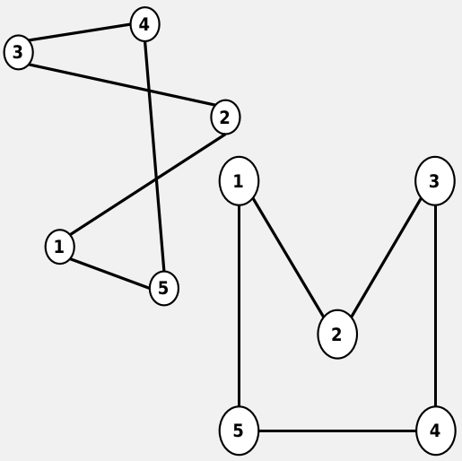
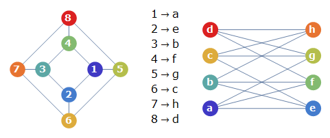
Por que o isomorfismo é importante na Biologia?
- Homologia estrutural: identifica padrões conservados na evolução (ex.: redes de interação proteica em eucariotos vs. bactérias).
- Engenharia metabólica: redes isomorfas em microrganismos podem ser “copiadas” para organismos-modelo.
- Descoberta de drogas: alvos farmacológicos em uma espécie podem ser inferidos a partir de redes isomorfas em outras.
2.7 Passeio & Caminho & Trilha
2.7.1 Passeio (Walk)
Um passeio de comprimento k em um grafo é uma sequência alternante de vértices e arestas v₀, e₀, v₁, e₁, v₂, e₂, … , vₖ₋₁, eₖ₋₁, vₖ, que começa e termina em vértices, onde cada aresta eᵢ conecta os vértices vᵢ e vᵢ₊₁. Vértices e arestas podem se repetir.
2.7.2 Caminho (Path)
Um caminho é um passeio no qual todos os vértices (exceto, possivelmente, o primeiro e o último) são distintos — e, portanto, também sem arestas repetidas.
Exemplo: A, e₁, B, e₂, C (vértices distintos).
2.7.3 Trilha ou Trajeto (Trail)
Trilha é um passeio onde todas as arestas são distintas, mas os vértices podem se repetir.
Exemplo: A, e₁, B, e₂, C, e₃, A, e₄, D (usa cada aresta apenas uma vez).
2.7.4 Ciclo (Cycle)
Passeio fechado (v₀ = vₖ), sem repetir arestas e com vértices distintos, exceto o primeiro e o último.
Exemplo: A, e₁, B, e₂, C, e₃, A. Exemplo biológico: o Ciclo de Krebs é uma rede metabólica circular.
2.8 Caminhos especiais
2.8.1 Caminho simples
Um caminho em que todos os vértices são diferentes — uma sequência de vértices conectados por arestas, sem repetição de vértices ou arestas.
2.8.2 Caminho Euleriano
Um Caminho Euleriano é um caminho em um grafo que visita cada aresta apenas uma vez.
2.8.3 Caminho Hamiltoniano
Um caminho hamiltoniano é um caminho que permite passar por todos os vértices de um grafo G, não repetindo nenhum, ou seja, passar por todos uma só vez cada.
2.9 Comprimento e Ciclo
2.9.1 Comprimento
É dado pelo número de arestas atravessadas de um vértice inicial a um vértice final.
2.9.2 Ciclo
Um caminho em que o vértice de início e o vértice de término são o mesmo.
2.10 Distância
A distância entre dois vértices é o comprimento do menor caminho entre eles, ou ∞ se não existir um menor caminho.
2.10.1 Menor caminho
É um caminho de tamanho mínimo entre dois vértices. Podem existir vários menores caminhos (obrigatoriamente do mesmo tamanho), passando por diferentes vértices, entre dois vértices.
Exemplo:
Fazer a distância entre 6 e 2 passando por 5 e por 3.
Depois fazer a distância entre 6 e 1 passando por 5 e por 3.
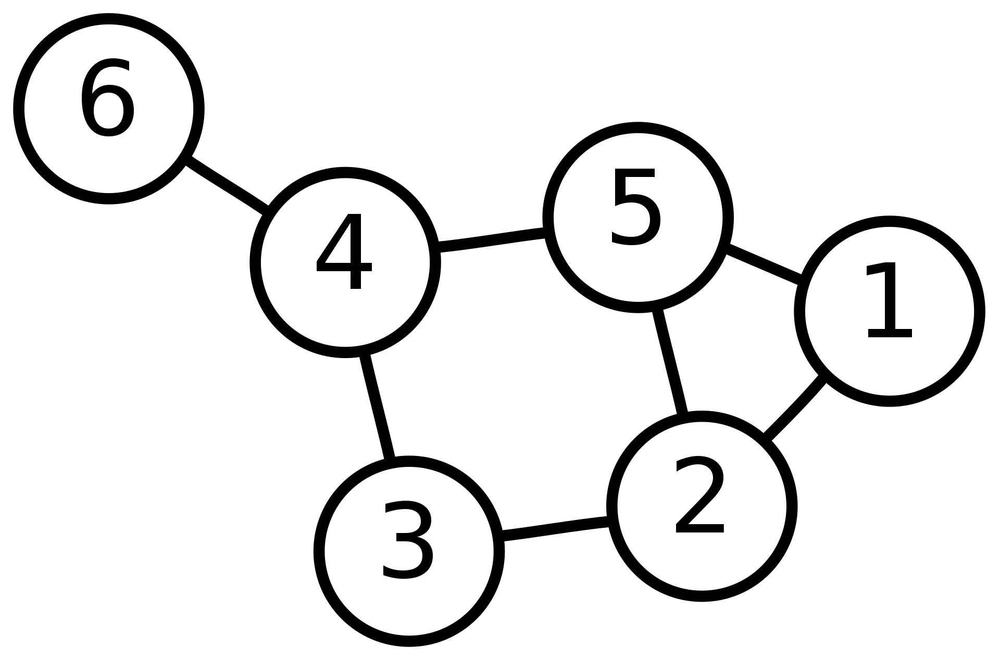
2.11 Outros tipos de grafos
2.11.1 Grafos Mistos
Um grafo que possui arestas direcionadas e não direcionadas.
Nota
Exemplo: rede de sinalização com interações bidirecionais (ex.: feedback) e unidirecionais (ex.: fosforilação).
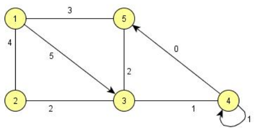
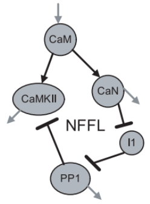
2.11.2 Multigrafo
É um grafo onde dois vértices podem ser ligados por mais de uma aresta.
Nesse caso o pseudografo seria um grafo dirigido com pares de arestas paralelas dirigidas conectando cidades para mostrar que é possível voar para e a partir destas locações.
Nota
Exemplo: proteínas que interagem por diferentes domínios ou em diferentes condições.
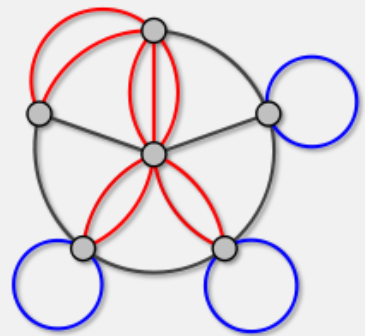
2.11.3 Grafo Valorado ou Ponderado
São grafos nos quais as arestas possuem valores associados dando peso a cada conexão/interação.
Nota
Exemplo: rede metabólica com fluxos (peso = taxa de produção) ou redes de coexpressão gênica (peso = correlação).
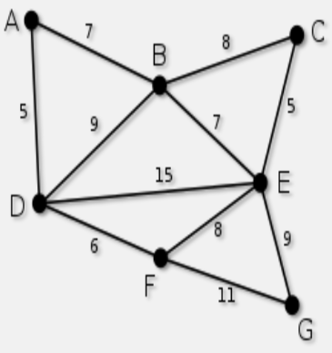
2.11.4 Hipergrafo
No hipergrafo, uma única aresta pode ligar mais de dois vértices.
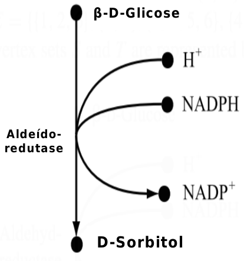
2.11.5 Grafos Bipartidos
Os hipergrafos podem ser representados por grafos bipartidos. Grafos bipartidos são aqueles que podem ser divididos em dois subgrafos disjuntos.
Nota
Exemplo: interação fármaco-proteína (conjunto A = fármacos, conjunto B = proteínas-alvo).
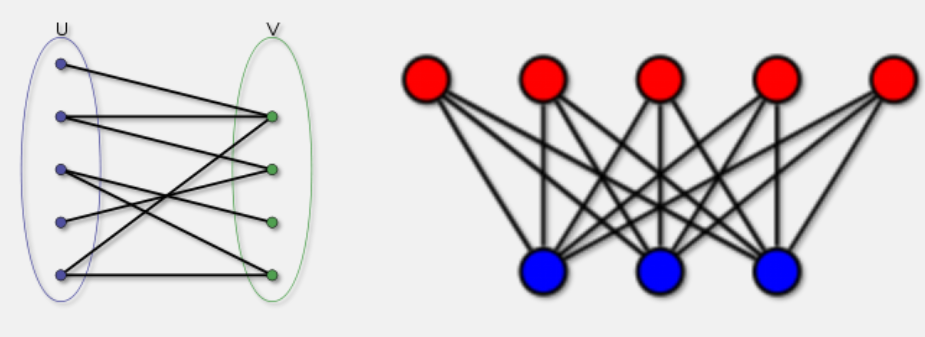
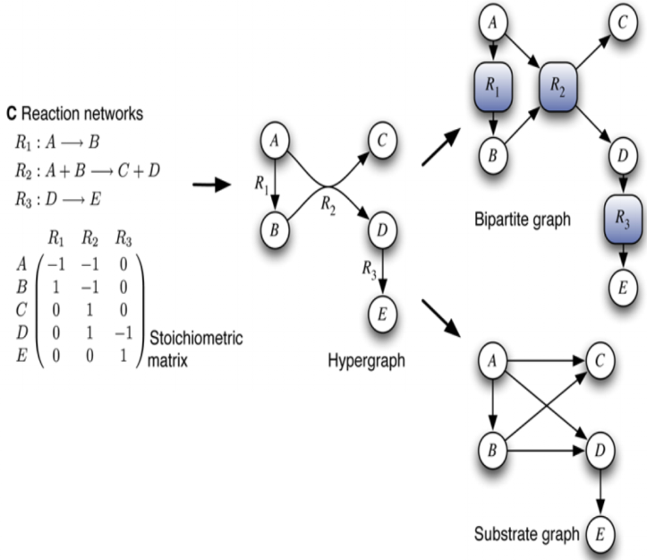
2.12 Árvores
As árvores desempenham um papel importante na biologia, onde representam, por exemplo, as relações evolutivas entre as espécies como uma árvore filogenética.
- Uma árvore é um grafo acíclico conectado e não-direcionado.
- Os vértices de uma árvore com grau 1 são suas folhas.
- Todos os outros vértices são vértices internos.
- Uma árvore enraizada consiste de uma árvore G = (V, E) e um vértice distinto r ∈ V chamado de raiz.
- A profundidade de um vértice é o comprimento do caminho entre a raiz e este vértice.
- A altura de uma árvore é a profundidade máxima de um vértice.
- Uma árvore binária é uma árvore onde cada vértice tem no máximo grau 3.
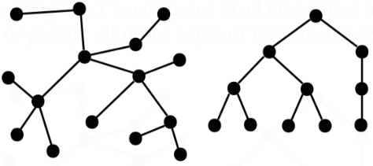
2.13 Representações de grafos
2.13.1 Matriz de adjacência
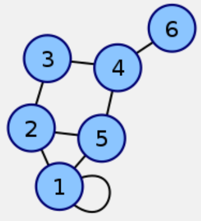
Matriz de adjacência com os vértices: 1, 2, 5, 4, 3, 6
\[ \left[ \begin{array}{c|cccccc} & 1 & 2 & 3 & 4 & 5 & 6 \\ \hline 1 & 2 & 1 & 0 & 0 & 1 & 0 \\ 2 & 1 & 0 & 1 & 0 & 1 & 0 \\ 3 & 0 & 1 & 0 & 1 & 0 & 0 \\ 4 & 0 & 0 & 1 & 0 & 1 & 1 \\ 5 & 1 & 1 & 0 & 1 & 0 & 0 \\ 6 & 0 & 0 & 0 & 1 & 0 & 0 \\ \end{array} \right] \]
Nota
- Quando o grafo é não-direcionado: a matriz de adjacência é simétrica.
- Quando o grafo é direcionado: a matriz de adjacência é assimétrica.
2.13.2 Lista de adjacência
Lista de adjacência:
- 1 = {1, 2, 5}
- 2 = {1, 3, 5}
- 3 = {2, 4}
- 4 = {3, 5, 6}
- 5 = {1, 2, 4}
- 6 = {4}